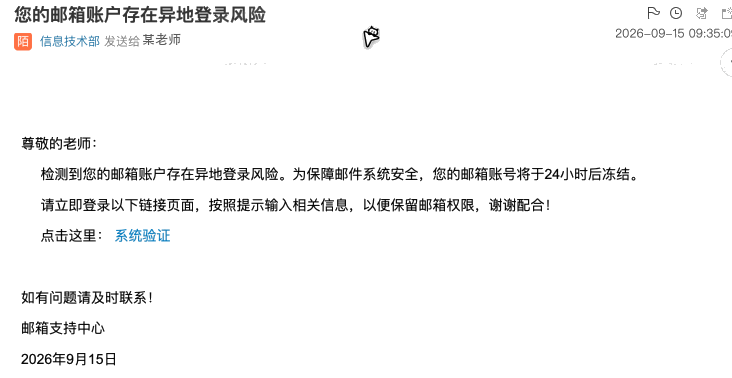

谁发的：发件人与「陌」字标识
本校邮箱列表里，开头标着橙色「陌」字的邮件就是要特别留意的陌生来信——但「陌」是提示，不是判决。这一讲教你怎么从显示名走到真实地址。
🎯 学完本讲，合上书你应该能：
- 在邮件截图里指出显示名与实际发件地址的差别
- 说出本校邮箱「陌」字标识出现的条件及它提示的风险
- 用一个反例说明「陌」字不等于钓鱼邮件
- 用两个例子区分近似域名与子域混淆
- 解释为什么不能只看发件人显示名就相信一封邮件
3.1「显示名」只是自我介绍，@ 后面才是真身份
上一讲把一次上当拆成了六步攻击链，第一步就是「伪装身份」。从这一讲起，我们进入四个检查点的第一站——谁发的。先别急着判断好坏，先学一件更基础的事：一封邮件里其实有两个「发件人」，而你平时看到的那个，往往是最不代表身份的那个。
请回想本校邮箱里那封让人印象很深的邮件。列表里,it 显示的发件人是「信息技术部」四个字，看着亲切又权威。但如果你点开详情，会发现在这四个字后面的尖括号里，装着一个和学校毫无关系的地址。这两个东西不是一回事：前者叫显示名（Display Name），是发件人自己填给收件人看的一行备注；后者才是发件地址，邮件系统真正用来标识「这封信从哪个邮箱账号投递出来」的信息。
把区别说透一点。显示名就是信封上那行手写的寄件人姓名——你想写「校长」「财务处」「XX 客服中心」都行，没有任何机制会去核对它是否属实。发件地址则是信封背面的真实回邮地址，邮件服务器靠它决定这封信从哪来、回信往哪走。骗子要的不是让你看见真地址，而是让你的目光停在那个好记又权威的显示名上。所以第一步永远是把目光从显示名上挪开，挪到那串带 @ 的地址上。

读地址有一个固定口诀：只看 @ 后面，而且要读完整。@ 前面那一段（本地部分）是可以自由设置的昵称，比如 admin、service、helpdesk，看起来都很官方，却说明不了任何归属。真正决定「这是谁的邮箱」的是 @ 后面的域名。上面这封信 @ 后面是 example.com，一个和学校没有关系的示例域名，那么无论前面的显示名写得多像信息技术部，它的真实身份都是「外部陌生来信」。记住：名字可以自称，域名不会陪你演戏。
看发件人分两步走。第一步读显示名，只回答「对方自称是谁」，不作为信任依据；第二步展开地址，只读 @ 后面的完整域名，回答「对方实际从哪个域发来」。两步结论一致（显示某部门、域名也是校内域名）才算过这一站；只要显示名和域名对不上，立刻降级为「待核实」，不在这封信里做任何动作。这条规则比任何「破绽清单」都耐用，因为骗子可以换显示名、换话术，却绕不开「他总得有个发件地址」这件事。
误区一：「显示名写着学校部门，就一定是学校发的」。错，显示名是发件人自己填的，谁都能写成「信息技术部」。误区二：「地址前缀是 admin / service，就代表是官方账号」。错，@ 前面的昵称同样可随意取，判断身份要看 @ 后面的域名。误区三：「我认识这个人，名字对就没问题」。错，名字是显示名，能被冒充；要核对的是地址，不是名字。把信任放在显示名上，正是攻击链第一步能得逞的原因。
🧠 回忆卡片 · 先默答再翻面
3.2「陌」是提醒你多看一眼，不是替你判了刑
上一节学会了要展开地址看域名。但在真实的收件箱里，你第一眼看到的往往不是地址，而是列表开头一个橙色的「陌」字。很多同学盯着它，心里立刻二选一：要么「带陌就是钓鱼，删掉拉倒」，要么「带陌的我也收到过正常的，不用管」。这一节专门把这个最容易被误读的标记讲透——它是全课最关键的一处辨析。
先把定义说准。本校邮箱列表开头那个橙色「陌」字标识，含义是陌生发件人提示：这封邮件来自一个不在你常用联系人、通讯录或既往往来记录里的地址，系统因此替你标一下，提醒你「这个人你没打过交道」。它是校内邮箱给你的一份额外线索，是免费的、自动的。但请注意它生成的依据——它只判断「你认不认识这个地址」，不判断「这封信是不是钓鱼」。系统并没有逐封做安全鉴定，它做的只是比对联系关系。
这个区别一旦想通，一个看似矛盾的现象就不矛盾了：为什么一封正常的学术期刊来信也带「陌」？因为那位期刊编辑、那台会议通知系统，确实从来没和你通过信，对你而言就是陌生地址。于是它同样被标「陌」。下面两封邮件并排放着，带你把这件事彻底看清：左边是演练钓鱼邮件，右边是正常外校学术邮件，两封都带「陌」。请你先把解析盖住，只看列表和地址，试着自己判断哪封能点。

收件人某老师
主题关于您投稿的审稿进度通知
本邮件由投稿系统自动发出，请勿直接回复。
把两封对照起来看，结论就浮出水面了：「陌」只负责把你的注意力叫醒，不负责替你下结论。它像一个路口的黄灯——提醒你减速观察，而不是红灯让你直接停车，更不是绿灯让你放心通行。带「陌」的可以是钓鱼，也可以是正常来信；不带「陌」的，也不代表安全（如果对方已经在你的通讯录里，或被系统误判为熟悉）。所以「陌」既不是判钓鱼的充分条件，也不是判安全的依据。
「陌」的真正价值，是它把你从「随手就点」的自动模式里拽出来一秒。正确的因果链是：看到「陌」→ 多查一步（展开地址、核对完整域名、扫一眼话术和链接）→ 依据查到的证据再下结论。也就是说，「陌」触发的是「查」这个动作，不是「判」这个结论。把「提示」当成「判决」，正是这一讲要纠正的头号误区——它既会让你误删正常邮件，也会让你在真正危险的邮件面前放松警惕，因为你已经习惯性地把判断权交给了那个小标记。
两个极端都是错的。极端一：「凡是带「陌」的都是钓鱼」——错，右边那封正常期刊邮件就是反例，照此处理会误伤大量正常学术往来。极端二：「带「陌」的正常邮件我见过，以后不用管它」——也错，左边那封演练邮件同样带「陌」，照此放行正中骗子下怀。正确姿势在两端之间：「陌」不改变你的结论，只增加你的步骤。它让你从「看一眼就点」变成「多看一眼再决定」，而这一眼，往往就是全课反复强调的「停六秒」。
🧠 回忆卡片 · 先默答再翻面
3.3名字长得像，不等于就是你认识的那个人
上一节解决了「看到「陌」该怎么用」，这一节解决展开地址之后的下一个问题：域名字面上看着像学校，就真的安全吗？答案是未必。骗子知道你会去看 @ 后面，于是把功夫下在了「让域名看上去像学校」这件事上。常见手法有三类：近似域名、子域混淆和前后缀伪装。它们都不改显示名，专门骗你那一眼扫过去的速度。
先讲近似域名。它的原理是用形近字符替换真实学校域名里的字母或数字：用两个小写字母 rn 冒充字母 m，用数字 0 冒充字母 o，用数字 1 冒充字母 l。比如把 mail.ynu.edu.cn 写成 rnail.ynu.edu.cn，正常字体下 rn 和 m 几乎难分；把 portal.ynu.edu.cn 写成 porta1.ynu.edu.cn，末尾的 1 和 l 也极易看漏。整串地址看起来「有 ynu、有 edu、有 cn」，可它其实是一个完全独立的外部域名，和学校没有任何关系。
再讲子域混淆。这一招更隐蔽，因为它干脆把学校域名原封不动地放进了地址里——但放在了错误的位置。例如 ynu.edu.cn.evil.example：这串字符里确实含有完整的 ynu.edu.cn，但它是作为 evil.example 的一个子域出现的。判断一个域名属于谁，要从右往左读：最右边是根与顶级域，往左是逐级子域。这串地址真正注册的是 evil.example，ynu.edu.cn 只是挂在它下面的一级名字，就像「XX 学校 · 某诈骗公司」里的前半截只是一个部门名，公司老板还是后面那家。骗子赌的就是你从左往右读，第一眼看到 ynu.edu.cn 就以为是自己学校。
还有第三类，和前两类反着来：它把学校域名原样留在后面，只在前面或后面多添一点点东西。比如 service@i.ynu.edu.cn、system@sso.ynu.edu.cn、oa@mail.ynu.edu.cn-vpn、it@ynu.edu.cn_——学校域名一个不少，但完整域名分别是 i.ynu.edu.cn、sso.ynu.edu.cn、mail.ynu.edu.cn-vpn、ynu.edu.cn_，没有一条逐字等于你从学校官网记住的 ynu.edu.cn 完整域名。骗子赌的就是你扫到 ynu.edu.cn 就放心。记住：学校域名被放在前面（子域混淆）、或学校域名在后面却多了前缀和尾巴（前后缀伪装），判法是同一条——从右往左读出完整域名，再和官方地址逐字比对。
收件人某老师
主题【紧急】您的账号需在今日完成核验
核验入口：立即核验
把三类手法并排记住，就不容易被那「一眼」骗过。近似域名改的是字符——把 m 换成 rn、把 o 换成 0，靠的是你视力扫描的速度；子域混淆改的是结构——把学校域名塞进别人的域名里当前缀，靠的是你从左往右读的阅读习惯；前后缀伪装改的是边界——把学校域名留在后面，前后多添字符，靠的是你扫到熟悉字样就放心的惯性。破解办法对应也有三条：对前者，放大看、逐字读，尤其留意 rn / m、0 / o、1 / l 这几组；对后两者，从右往左定位完整域名，确认它逐字等于你从官方渠道记住的那个地址，而不是被别人当子域挂着或被加了前缀尾巴。
核对校内外域名，只认一条：从 @ 后面那串地址的最右端往左读，找到真正的注册域名（通常是「学校标识 + edu.cn」这一段），确认它处在靠右的归属位置，而不是别人域名里的子域或前缀。在这里，「地址里出现了 ynu.edu.cn」不等于「这是学校的信」——关键看它是不是处在决定归属的位置。任何把学校域名放在中间（如 ynu.edu.cn.evil.example）或在它前后多添字符（如 i.ynu.edu.cn、mail.ynu.edu.cn-vpn）的写法，都判定为可疑，一律换官方通道核实，不在信里动作。
误区一：「地址里有学校的字母就放心」——错，子域混淆专门利用这一点，学校名字可以出现在别人域名的任意位置。误区二：「HTTPS 小锁 / 显示名正规就说明是真页面」——那只是传输加密与自我介绍，和域名归属无关（链接的坑第 5 讲细讲）。误区三：「近似域名我看得出来」——形近字符在正常字号下极难分辨，别赌眼力，要养成「放大 + 从右往左读」的习惯，而不是靠自信。
🧠 回忆卡片 · 先默答再翻面
3.4From 说信从哪来，Reply-To 决定你回信去哪
前三节都在看「这封信从哪里来」。这一节看一个大多数人从未注意、却很关键的隐藏字段——当你点「回复」时，信会发到哪里。它叫Reply-To（回复地址），和显示给收件人的发件人字段 From（发件人地址）是两回事。理解它们的分工，你就能看懂一种「发件人看着没问题，回信却掉进陷阱」的套路。
先定义清楚。From 是这封信自称的投递来源，也就是前几节我们核对的那个地址；Reply-To 是发件人额外指定的「请往这个地址回复」。正常情况下，两者相同或都指向学校的官方邮箱，你回复谁都还在校内。但 Reply-To 由发件人自己填写，于是骗子可以把它设成一个外部地址：发件人那栏看着是正常的校内名，可你一点「回复」，信就悄悄飞到了他控制的邮箱里。很多剧本会在正文里补一句「如需处理请直接回复本邮件」，就是用话术把你往这个陷阱里赶。
这对字段为什么危险？因为它同时利用了前几节建立起来的信任。你已经学会了「看发件人地址」，于是骗子把 From 做得很像校内；你确认了发件人没问题，就放松了对「回复动作」的警惕。但他真正想要的是你的账号、验证码、身份信息，而这些他会让你「回复邮件告知」。一旦你按了回复，信息就离开学校，进了外部邮箱。这里要强调全课的核心动作：看不懂、拿不准，就不要在这封信里回复，另走独立通道——自己打开学校官网入口，或直接用电话核实。
回复地址（Reply-To）<collect@fake.example.org>
收件人某老师
主题关于您课程成绩复核的告知
请勿通过其他渠道办理。
上面这封信把三个检查点串在了一起：发件人地址不对（3.1）、带「陌」提示陌生（3.2）、域名与 Reply-To 都指向外部（3.3 与本节），再加上「请勿通过其他渠道」这种不让核实的催促（下一讲细讲话术）。你会发现，判断从来不是靠某一个「破绽」一锤定音，而是靠一连串「对不上」不断累积。Reply-To 不一致只是其中很硬的一条证据：正规校内通知没有理由把你的回复引向一个校外陌生域名。
展开邮件详情时，除了看 From，再找一眼「回复地址 / Reply-To」。若它不存在，或与 From 不一致且指向外部陌生域名，就升级为可疑，尤其当正文要求你「回复本邮件」提供账号、验证码、身份信息时，一律不回。更稳妥的习惯是：无论 Reply-To 指向哪里，涉及账号和敏感信息的核实都不用「回复」完成，而是退出这封信，走学校官网入口或电话。这样即便对方把 Reply-To 伪装得再像，你也永远不会被它牵着走。
误区一：「发件人地址对就安全」——错，Reply-To 能把你的回信引到外部，发件人正常不代表回信也安全。误区二：「直接点回复最方便」——涉及敏感信息时，回复是最危险的动作之一，因为你把信息主动递了出去。误区三：「我回一句问问他是谁总没事吧」——错，一句回复既确认了你的邮箱是活跃目标，也可能被套取更多信息。记住：核实要走独立通道，而不是在这封信里对话。
🧠 回忆卡片 · 先默答再翻面
🃏概念卡：本讲概念的一分钟画像
翻面前先自问：这个概念我能用一句话讲清楚吗？讲不清的那张，回去重看对应小节。
✍️分层习题：先自己写，再点开核对
提示
逐句定位被混淆的那对概念：显示名 vs 发件地址、提示 vs 判决、昵称 vs 域名。
完整解答
提示
回到「陌」的生成依据——它比对的是什么？比对结果能推出什么、不能推出什么？
完整解答
提示
按本讲四节的顺序逐项过：显示名/地址 → 域名 → Reply-To → 话术，最后再下结论。
完整解答
提示
别被共同的「陌」带偏。对乙的地址从右往左读，找到真正的注册域名。
完整解答
提示
回想全课核心动作：不在这封信里动作 → 换独立通道核实 → 按流程上报；若已交出凭据则转入补救。
完整解答
✅本章自测：每题只选一个答案
- A. 发件人显示名写的是哪个部门
- B. 发件地址 @ 后面的完整域名
- C. 发件地址 @ 前面的昵称是否像管理员
- D. 邮件主题是否带有学校常见的措辞
- A. 带「陌」的邮件一定是钓鱼邮件，应直接删除
- B. 带「陌」说明系统已鉴定为安全，可放心打开
- C. 「陌」只提示发件人陌生，正常外校来信也会带，看到要多查一步
- D. 不带「陌」的邮件一定安全，不必核对
- A. notice@ynu.edu.cn
- B. notice@rnail.ynu.edu.cn
- C. notice@ynu.edn.cn
- D. notice@ynu.edu.cn.evil.example
- A. 它由发件人指定；与 From 不一致且指向外部时，要求你「回复本邮件」应视为高危
- B. 它只是装饰，回信永远发给 From 里的地址
- C. 它由收件人的邮箱系统自动生成，无法被伪造
- D. 只要 From 是校内地址，Reply-To 指向哪里都安全
- A. 既然显示名是信息技术部又有「陌」，直接判定钓鱼并举报，不必再看
- B. 时间紧迫，先点链接看看是不是真的，再决定
- C. 不点链接、不填信息，展开地址核对域名，自行从学校官网入口登录查证，必要时上报
- D. 回复这封邮件，向「信息技术部」询问真假
🗣️ 用自己的话，三句话讲完本讲
对着空气（或室友）说出这三句。说卡壳的那句，回去重读对应小节。
句1：这讲解决什么问题？——
句2：核心机制是什么？——
句3：它和前后讲怎么分工？——
🔁 间隔复习计划
回忆本身比重读有效 10 倍。到点只做一件事：翻卡 + 重做标记题，不重读正文。
| 时间点 | 复习内容 | 预计用时 |
|---|---|---|
| 第 1 天 | 翻概念卡 1–6；默答回忆 3.1-1、3.2-1、3.3-1、3.4-1 | 12 分钟 |
| 第 7 天 | 重做自测 2、3（「陌字≠钓鱼」与子域混淆）+ L2 两题（逐字段标注、双邮件对照）；翻错的概念卡 3、4、5 | 15 分钟 |
| 第 30 天 | 三句话复述 + 合上书挑战全过；补默回忆 3.2-2、3.3-2、3.4-2 与自测 4、5 | 15 分钟 |
🚪 合上书挑战：能全写出来，这一讲才毕业
- 说出邮件里两个「发件人」的区别，并讲清为什么判断身份只看 @ 后面的完整域名。
- 准确说明本校邮箱「陌」字标识的含义与生成依据，并讲清「陌触发查、不触发判」。
- 举出一个「带「陌」却是正常邮件」的反例，用它说明「陌字不等于钓鱼」。
- 各举一例区分近似域名与子域混淆，并说出「从右往左读域名」的判定规则。
- 解释 From 与 Reply-To 的分工，以及为什么「Reply-To 指向外部 + 要求回复提供验证码」是高危。
- 写出收到可疑邮件时的完整处置顺序，并说明若已交出密码顺序如何变化。
- 一句话回答本讲主线问题：显示名、实际地址、Reply-To 哪个才算发件人，「陌」字标了就一定是钓鱼吗？